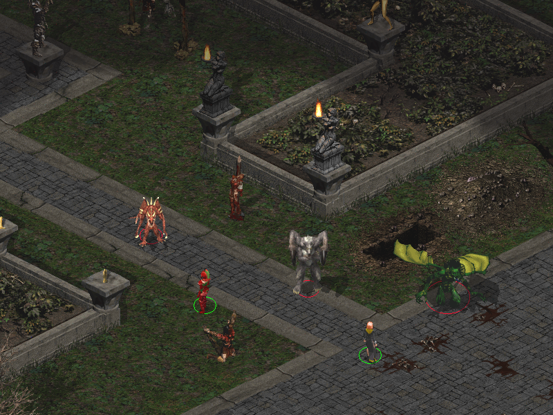
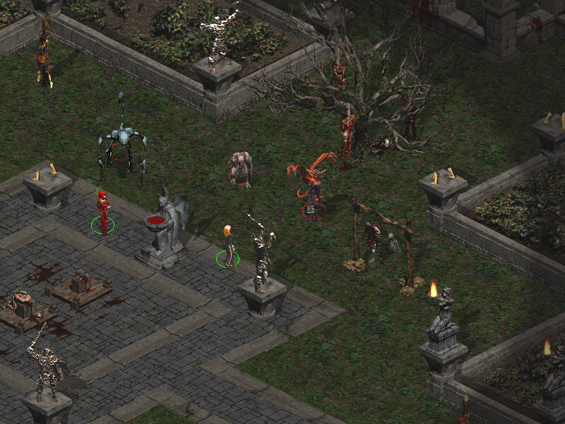
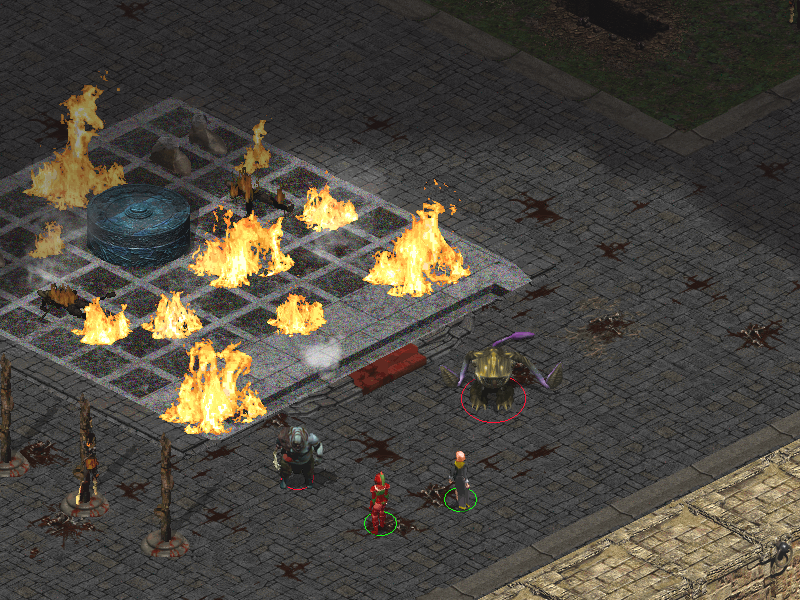
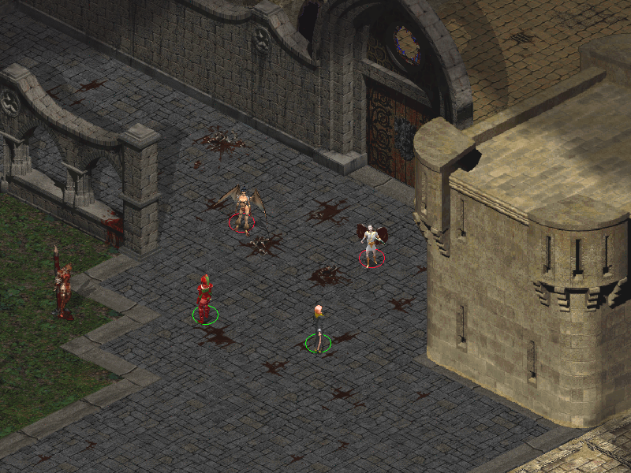
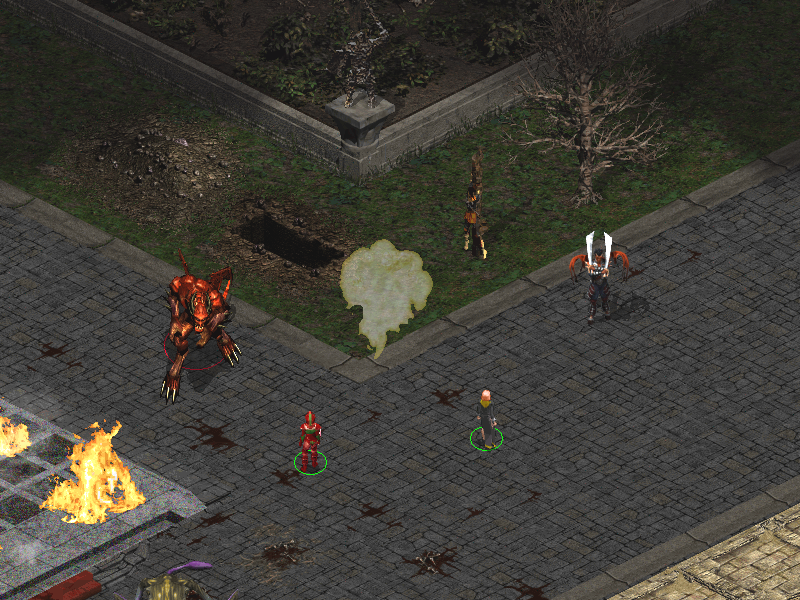
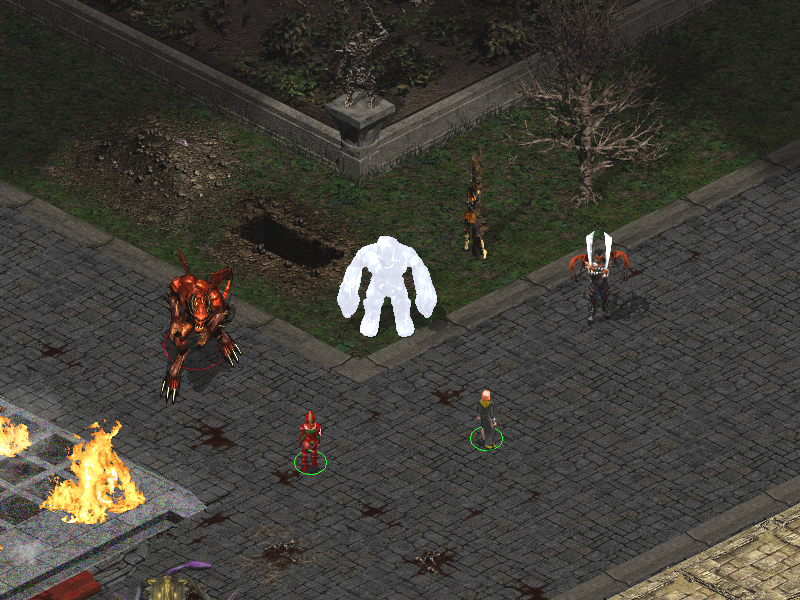
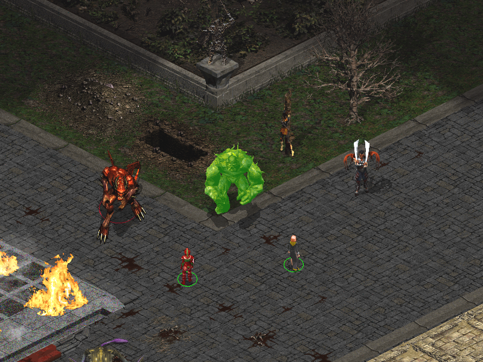

Screenshots
Components [100] Distinctive Fiends - [150-175] Pit Fiends
☛ White, green and red Abishai (get the relevant IWD or PS:T animations), Glabrezus (get the proper glabrezu animation instead of balor or cornugon) and Nabassus (get a green-grey tanar'ri animation).
hover to show original content

☛ Bone fiends (get the NWN osyluth animation), Maurezhi (get a dark ghoulish animation) and Nabassus (get a green-grey tanar'ri animation).
hover to show original content

☛ Manes (get the IWD drowned dead animation) and Yochlols - except those in drow form - (get a dark otyugh-based animation).
hover to show original content

☛ Succubi (get the NWN succubus animation) and Erinyes (get a black-winged elf avatar).
hover to show original content

☛ Pit Fiends (get the NWN animation), Chromatic Demon (gets a somewhat more colourful base animation) and Lesser Demon Lord.
hover to show original content

☛ Chromatic Demon (gets a somewhat more colourful base animation).


•BACK TO TOP